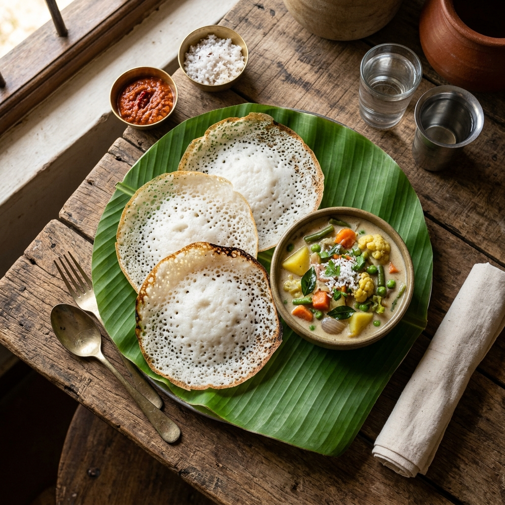

Appam with Stew
class="food-card"> alt="Puttu and Kadala" onerror="this.src='https://images.unsplash.com/photo-1601050690597-df0568f70950?auto=format&fit=crop&w=800&q=80'">
alt="Puttu and Kadala" onerror="this.src='https://images.unsplash.com/photo-1601050690597-df0568f70950?auto=format&fit=crop&w=800&q=80'">
Puttu and Kadala

Karimeen Pollichathu

Palada Payasam

Kerala Beef Fry
Malabar Biriyani